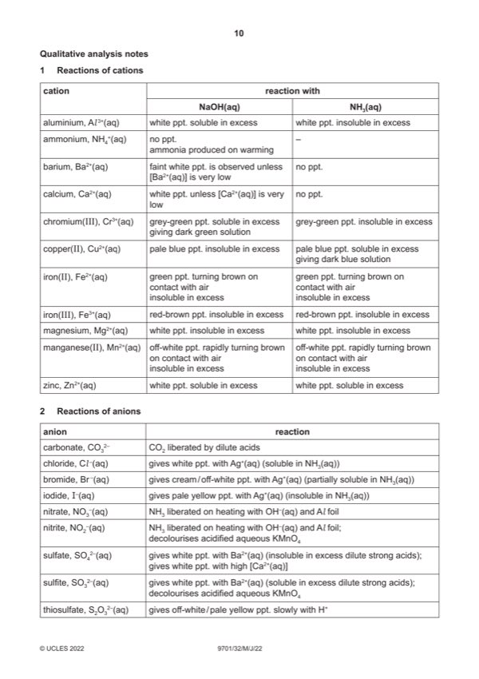

Question 1

Original paper page 10
Part 1(a) — solution
- two burette readings and titre for the rough titration
- initial and final burette readings for two (or more) accurate titrations
- initial / start and (burette) reading / volume + unit
- final / end and (burette) reading / volume + unit
- titre + unit or volume / FB 1 and used / added + unit
- two (or more) accurate identical titres (ignoring any that are labelled ‘rough’), then
- two (or more) accurate titres within 0.05 cm3, then
- two (or more) accurate titres within 0.10 cm3, etc
Mark points
- two burette readings and titre for the rough titration
- initial and final burette readings for two (or more) accurate titrations
- initial / start and (burette) reading / volume + unit
- final / end and (burette) reading / volume + unit
- titre + unit or volume / FB 1 and used / added + unit
- two (or more) accurate identical titres (ignoring any that are labelled ‘rough’), then
- two (or more) accurate titres within 0.05 cm3, then
- two (or more) accurate titres within 0.10 cm3, etc
Part 1(a) — solution
Award V if ⩽ 0.50 (cm3)
Award VI if ⩽ 0.30
Award VII if ⩽ 0.20
Mark points
- Include the ideas shown in the solution above.
Part 1(b) — solution
Correctly calculates the mean titre correct to 2 dp from accurate titres that are within 0.20 cm3 total spread 1
Mark points
- Include the ideas shown in the solution above.
Part 1(c)(i) — solution
All final answers for (c)(ii), (c)(iii), and (c)(iv) are to 3–4 sf 1
2022 Page 5 of 11
9701/32 Cambridge International AS & A Level – Mark Scheme May/June 2022
Mark points
- Include the ideas shown in the solution above.
Part 1(c)(ii) — solution
Answer: AND
- n(NaOH) = 0.1 (b) / 1000
- n(NaHSO4) = same answer
Mark points
- n(NaOH) = 0.1 (b) / 1000
- n(NaHSO4) = same answer
Part 1(c)(iii) — solution
Answer: AND
- [NaHSO4] = final answer (c)(ii) 1000 / 25 (= (c)(ii) 40)
Mark points
- [NaHSO4] = final answer (c)(ii) 1000 / 25 (= (c)(ii) 40)
Part 1(c)(iv) — solution
- % NaHSO4 =
Mark points
- % NaHSO4 =